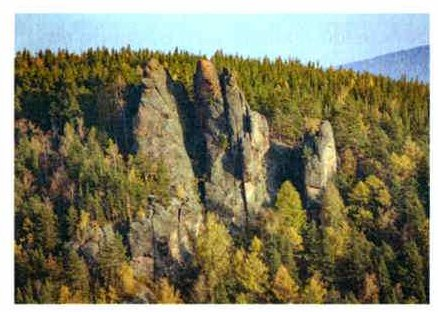
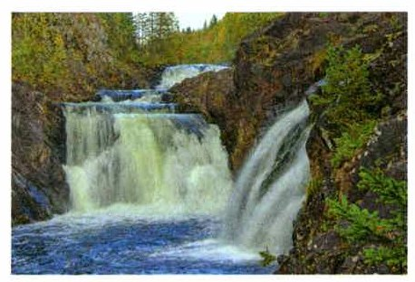
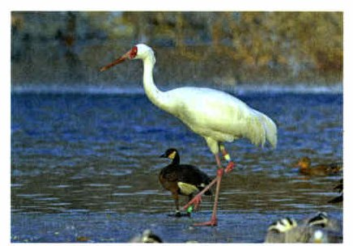
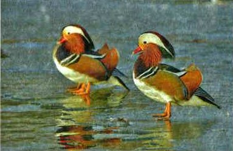
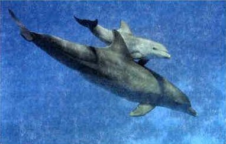
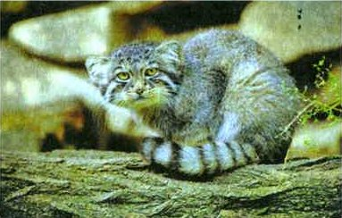
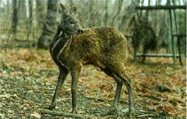
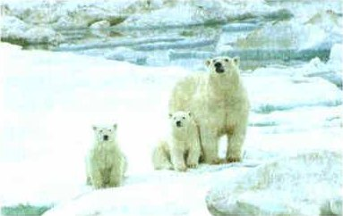
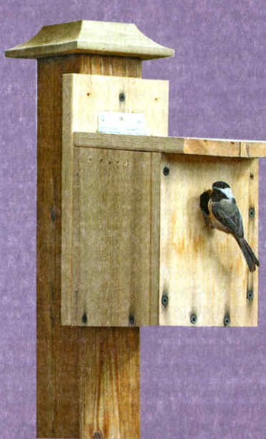

Как защитить вид
Как защитить вид живых организмов от уничтожения? Путей несколько.
Первый — законы, которые запрещают добывать редкие виды. По особому разрешению можно поймать немного животных или собрать семена редких растений — чтобы разводить и изучать их в неволе.
Второй — создать особо охраняемые территории там, где охраняемый вид живёт, выводит потомство или отдыхает во время перелётов. Это заповедники, национальные парки, заказники и памятники природы.
Охраняемые природные территории. Как можно защитить конкретный вид живых организмов от уничтожения? Существует несколько путей. Один из них подразумевает принятие и исполнение законов, запрещающих добычу редких видов в природе. Согласно этим законам, можно отлавливать лишь ограниченное количество животных или собирать семена редких растений по специальным разрешениям для размножения и изучения в условиях неволи.
Другой путь предусматривает создание особо охраняемых территорий в тех местах, где обитает, размножается или останавливается на путях миграций охраняемый вид. К таким особо охраняемым территориям относят заповедники, национальные парки, заказники и памятники природы. Чем же они различаются?
Заповедник, нацпарк, заказник, памятник
Заповедник — большая охраняемая территория, где запрещено любое хозяйство: пасти скот, строить, собирать грибы и ягоды, охотиться, рыбачить. Туда нельзя даже зайти без специального разрешения. Известные заповедники — Астраханский, Кедровая Падь, Кавказский, Окский, Красноярские Столбы (рис. 118).
В национальный парк могут приходить туристы, но только если строго соблюдают правила. Правила всегда висят у входа. В национальном парке человек — гость, а хозяева — все живые организмы, ради которых парк создали.
В заказнике хозяйство не запрещено, а ограничено. Правила зависят от цели. Если заказник устроили там, где отдыхают перелётные птицы, в это время туда нельзя, а в остальное время можно гулять и собирать грибы и ягоды — в заповеднике так нельзя. Бывают и охотничьи заказники: там помогают размножаться промысловым животным, а охота разрешена по очень строгим правилам.
Памятник природы — небольшая охраняемая территория: очень старое дерево, группа редких растений, водопад (рис. 119) или необычный родник.
Заповедником называют охраняемый природный комплекс на обширной территории, где запрещена не только любая хозяйственная деятельность (выпас скота, строительство, сбор грибов, ягод, охота, рыбалка и др.), но даже нахождение людей без специального разрешения. Широко известны такие заповедники, как Астраханский, Кедровая Падь, Кавказский, Окский, Красноярские столбы (рис. 118).
Национальный парк отличается от заповедника тем, что его могут посещать туристы, но при условии неукоснительного соблюдения правил поведения в национальном парке. Эти правила всегда вывешены при входе, чтобы посетители могли заблаговременно ознакомиться с ними. Посещая национальные парки, нельзя забывать, что человек в них лишь гость, а главные хозяева там все обитающие организмы, ради которых парки и создавались.
Заказник отличается от заповедника тем, что в нём не запрещена, а лишь ограничена хозяйственная деятельность человека. В зависимости от цели его создания в разных заказниках существуют различные правила.
Если заказник создаётся на пути остановки птиц во время сезонных миграций, то он может быть полностью закрыт для посещения в определённые сезоны, а в остальное время там можно гулять, собирать ягоды или грибы, чего нельзя делать в заповеднике. Кроме природных, существуют ещё и охотничьи заказники. На их территории создаются такие условия, которые способствуют размножению животных, являющихся объектами промысловой и спортивной охоты. В таких местах охота разрешена, однако она регулируется весьма строгими правилами.
Памятник природы представляет собой небольшую по площади особо охраняемую территорию. Такой статус может иметь, например, очень старое дерево или группа редких для этой местности многолетних растений, а также водопад (рис. 119), необычный родник.

▲ Чем эти скалы похожи на столбы?

▲ Почему водопад охраняют, хотя он не живой?
людям нельзя даже зайти без разрешения; запрещено любое хозяйство
туристам можно, но строго по правилам у входа
В заповеднике природа без людей, в нацпарке люди — гости.
1. Чем заповедник отличается от заказника?
Разведение в неволе
Ещё один способ сохранить вид — разведение в неволе: животных разводят или выращивают детёнышей, мальков, птенцов, а потом выпускают на волю.
В Окском заповеднике спасали белых журавлей — стерхов (рис. 120). У пары стерхов появляются два птенца, но выживает только один, более сильный. Учёные стали искать гнёзда с вертолёта и забирать одно яйцо. Птенца выводили в инкубаторе, выращивали и выпускали в природу. Для этого в заповеднике устроили журавлиный питомник; часть птиц оставляли там для изучения и размножения.
Очень важны зоопарки: там изучают редкие виды и разводят их. Есть Международная племенная книга: по ней подбирают пары животных так, чтобы детёныши были здоровыми. Например, есть Племенная книга тигров. Некоторые виды сохранились только в зоопарках — лошадь Пржевальского, олень Давида. Лошадей Пржевальского теперь достаточно, чтобы вернуть их в природу.
Разведение вида в неволе. Ещё одним способом сохранения вида является разведение его в условиях неволи или выращивание детёнышей животных, мальков рыб, птенцов для того, чтобы впоследствии выпустить их на волю.
Так, в Окском заповеднике проведена операция по спасению журавлей. Особенностью белых журавлей, или стерхов (рис. 120), является то, что у родителей появляется всего два птенца, причём один неизбежно погибает, и выживает более сильный птенец. Тогда было решено отыскивать гнёзда стерхов с вертолётов и забирать одно яйцо для искусственного выведения птенца в инкубаторе, выращивания его и возвращения в природу. Для этой цели в Окском заповеднике был организован журавлиный питомник. В нём оставляли часть птиц для изучения и размножения в неволе.
Важнейшая роль в сохранении редких видов принадлежит зоопаркам, где изучают особенность биологии редких видов и занимаются их размножением. Существует Международная племенная книга, с помощью которой подбирают пары животных так, чтобы у них были здоровые детёныши. Например, есть Племенная книга тигров. Некоторые виды животных сохранились только в зоопарках, например лошадь Пржевальского, олень Давида. В настоящее время поголовье лошади Пржевальского достаточно для того, чтобы вернуть этот вид в природу.

▲ Найди красные клюв и ноги. Какого цвета кончики крыльев?
2. Зачем учёные забирали из гнезда стерхов одно яйцо?
3. Как зоопарки помогают сохранить редкие виды?
Красная книга
В последние десятилетия биологическое разнообразие снижается. Главная причина — деятельность человека: он рубит леса, распахивает степи, осушает болота и разрушает места, где живут животные. Только когда многие животные, растения и грибы исчезли навсегда, люди поняли, какой непоправимый вред наносят природе.
Спасать исчезающих животных начал Международный союз охраны природы. В 1963 году он составил список редких и исчезающих животных — Красную книгу. Красный цвет — сигнал запрета, понятный всем людям мира. Позже в книгу внесли редкие растения и грибы.
В России Красная книга впервые вышла в 1983 году. Это официальный справочник о живых организмах, которым нужна особая охрана (рис. 121). По Красным книгам учёные следят за охраняемыми видами и решают, как их охранять и восстанавливать. Важно, чтобы каждый человек берёг места, где живут организмы, и их разнообразие: от этого зависит устойчивость всей живой природы.
Красная книга. Биологическое разнообразие организмов в последние десятилетия снижается. Главной причиной исчезновения животных стала деятельность человека. Вырубая леса, распахивая степи, осушая болота, человек разрушает места обитания животных, и они погибают. И только после того как многие животные, растения и грибы исчезли безвозвратно, люди стали понимать, что наносят непоправимый ущерб видовому многообразию природы. Инициативу по спасению исчезающих животных проявил Международный союз охраны природы. В 1963 году был составлен список редких и исчезающих животных — Красная книга. Её название объясняется тем, что красный цвет — сигнал запрета, понятный людям всего мира. Позже в эту книгу были включены редкие и исчезающие растения и грибы.
В России национальная Красная книга была впервые издана в 1983 году. Это официальный справочник, содержащий сведения о состоянии живых организмов, нуждающихся в специальной охране (рис. 121). Красные книги необходимы для организации исследований и слежения за состоянием охраняемых организмов и их местообитаний, для разработки и осуществления особых мер по их охране, восстановлению и научно обоснованному использованию. Очень важно, чтобы каждый человек был внимательным к живому миру, стремился сохранять места обитания и видовое разнообразие живых организмов. От этого зависит устойчивость всей живой природы на нашей планете.
Рис. 121. Животные, находящиеся под угрозой исчезновения
▲ Ты видела зубров в Приокско-Террасном заповеднике.

▲ Посчитай, сколько цветов в оперении.

▲ Дельфин — рыба или зверь? Вспомни, как он дышит.

▲ Найди полоски на хвосте и круглые зрачки.

▲ Найди рога. Есть они?

▲ Сколько здесь медведей?
4. Что такое Красная книга и для чего она нужна?
5. Почему виды исчезают?
Что можешь сделать ты
Каждый школьник может охранять природу родного края. Вместе с учителем можно изучить свой край: какие природные богатства в нём есть и какие из них тратятся неразумно. Можно исследовать леса, почву, поля, найти, откуда берётся загрязнение, и помочь благоустроить свой район.
Самое ценное на Земле — жизнь во всём её многообразии. Всё в природе связано. Все организмы приспосабливаются к среде, и только человек приспосабливает среду к себе. Если он не знает законов природы, он разрушает экосистемы. Чтобы этого не случилось, надо понять: мы — часть биосферы, и её судьба зависит от нас.
Роль учащихся в охране природы. Каждый из вас может принять активное участие в охране природы родного края. С этой целью под руководством учителя проведите ознакомление с местным краем, выявление его природных ресурсов, особенно тех, которые используются нерационально и поэтому нуждаются в охране и восстановлении. Ваши исследования могут касаться состояния лесов, эрозии почв, засорённости и заражённости вредителями полей и др. Вы можете изучить экологическое состояние окружающей среды в своём районе, выявить источники загрязнений, принять участие в его благоустройстве.
Осознание жизни как великой ценности. Самое ценное и важное, что существует на Земле, — это жизнь во всём её многообразии. Всё в природе находится во взаимодействии. Все живые организмы приспосабливаются к условиям окружающей среды, кроме человека, который приспосабливает среду к собственным потребностям. Хозяйственная деятельность человека, если она не опирается на знания законов природы, приводит к разрушению сложившихся в природе экосистем. Чтобы предотвратить беду, необходимо понять и осознать, что мы являемся частью биосферы, судьба которой зависит от нас.

▲ Где у домика вход? Кто может в нём жить?
Это задание 4 из «Проверьте себя». Ошиблась — не страшно, попробуй другую кнопку.
Ходить по тропинкам
Тропинки сделаны, чтобы не вытаптывать остальную землю (§24).
Разжечь костёр, где захочется
Огонь может перекинуться на лес.
Унести свой мусор с собой
Мусор в лесу — местная экологическая проблема (§26).
Сорвать редкий цветок на память
Лучше сфотографировать — и цветок останется.
Громко включить музыку
Шум пугает животных: человек здесь гость.
Фотографировать зверей издалека
Животных нельзя трогать и пугать, а смотреть можно.
Кормить диких зверей хлебом
Им вредна наша еда, и они перестают бояться людей.
Отпустить собаку без поводка
Собака может напугать или поймать диких животных.
6. Для чего необходимо сохранять все виды живых организмов на Земле?
Итоги главы 5 и всего учебника
Заповедник · Национальный парк · Заказник · Памятник природы · Красная книга
- Для чего необходимо сохранять все виды живых организмов на Земле?
- В чём различия заповедников, заказников, национальных парков и памятников природы?
- Что такое Красная книга и для чего она нужна?
- Сформулируйте правила поведения в природе.
- Подготовьте сообщение о редком животном, обитающем в вашем регионе, и его охране.
- Используя интернет-источники, научно-популярные журналы, газеты, книги, подготовьте сообщение на тему «Заповедник моего региона».
Что можете сделать лично вы для охраны природы?
Человек берёт у природы всё нужное для жизни. Его деятельность часто вредит природным сообществам, но люди научились исправлять этот вред. Правила рационального природопользования помогают меньше вредить биосфере.
Чтобы сохранить многообразие организмов на планете, создают особо охраняемые природные территории.
Для удовлетворения своих жизненно важных потребностей человек использует богатства окружающей среды. Его деятельность нередко наносит вред природным сообществам, но люди научились компенсировать ущерб, который они наносят природе. Принципы рационального природопользования помогают снизить воздействие хозяйственной деятельности человека на биосферу.
Чтобы сохранить многообразие организмов на планете, создаются особо охраняемые природные территории.
§27 Заповедники, национальные парки, заказники, памятники природы; разведение в неволе; Красная книга.
Глава 1 (§4—7). Методы изучения живой природы: наблюдение, измерение, эксперимент, таблицы и графики.
Глава 2 (§8—14). Организмы: клетка и микроскоп, ткани и органы, жизнедеятельность; классификация; растения, животные, грибы, бактерии, вирусы.
Глава 3 (§15—20). Среды обитания: водная, наземно-воздушная, почвенная, организмы как среда; сезонные изменения.
Глава 4 (§21—25). Природные сообщества: пищевые цепи и сети, разнообразие сообществ, природные зоны.
Глава 5 (§26—27). Живая природа и человек: как мы меняем природу и как её охраняем.
Ты прошла весь учебник биологии за 5 класс!
Проверь себя
Ошиблась — не страшно, попробуй другую кнопку.
Без специального разрешения туда нельзя даже зайти
Запрещено любое хозяйство и даже нахождение людей.
Туристы гуляют по правилам, которые висят у входа
Человек там гость.
Весной закрыт — там отдыхают перелётные птицы, а летом можно собирать грибы
Хозяйство ограничено, а не запрещено.
Очень старое дерево
Небольшая охраняемая территория.
Лосиный остров
Самый первый в России, 1983 год.
Приокско-Террасный, где ты видела зубров
Гостей водят только по особым тропам.
Водопад Кивач
Рис. 119.
Охота разрешена, но по строгим правилам
Это охотничий заказник.
1. Где нельзя даже находиться без специального разрешения?
2. Почему Красная книга — красная?
3. Почему у стерхов забирали одно яйцо?
4. Какой национальный парк — первый в России?
5. Какой вид сохранился только в зоопарках?
6. Кто символ Московского зоопарка?
Расскажи вслух
Как защитить вид
- Законы о запрете добычи редких видов.
- Охраняемые территории.
- Разведение в неволе.
Охраняемые территории
- Заповедник: нельзя ничего (Приокско-Террасный).
- Национальный парк: можно по правилам (Лосиный остров).
- Заказник: хозяйство ограничено.
- Памятник природы: старое дерево, водопад Кивач.
Разведение в неволе и Красная книга
- Стерхи в Окском заповеднике.
- Зоопарки и племенные книги; зубры, лошадь Пржевальского.
- Красная книга: 1963 год, в России — 1983.
Что могу сделать я
- Кормушки, мусор с собой, батарейки отдельно.
- Правила поведения в природе.
- Мы — часть биосферы.